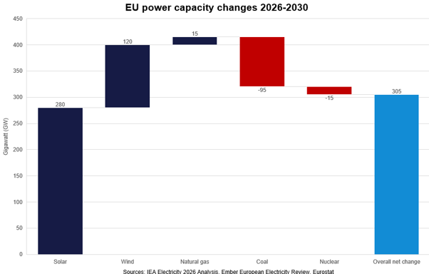
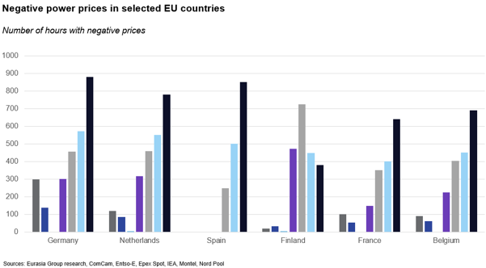
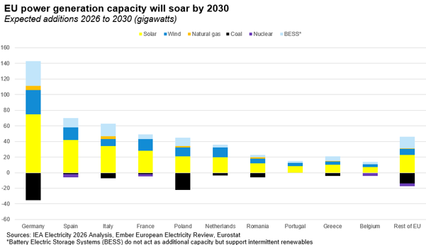
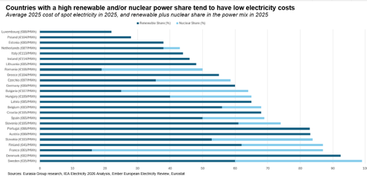

|
 |
|||
|
||||
|
||
European power prices will likely fall sharply before 2030 as generation and grid investment soars. Major investment in generation, storage, and transmission will come online before 2030. EU net power generation capacity is expected to rise by more than 300 gigawatts (GW) between 2026 and 2030, far above expected load growth of about 50 GW. Parallel plans to invest hundreds of billions of euros into Europe’s grid aim to connect regions in power surplus with those in deficit. Lower prices matter most for Europe’s struggling industries— chemicals, metals, and steel broadly require costs below €70/MWh to be internationally competitive. Growth sectors like AI data centres would also benefit, while lower costs would speed the electrification of transport, heating, and industry.  German baseload power for 2027 delivery trades near €95 per megawatt-hour (MWh), while 2028 and 2029 forwards already slope toward €82/MWh and €75/MWh. If infrastructure arrives as planned, the decline should accelerate into the €60s/MWh, with similar trends likely in the Netherlands and Belgium. Retail power prices, however, may remain higher for longer, as many investment programs are funded through grid and subsidy fees built into household tariffs. Even the wholesale power price decline will be uneven. Until roughly 2028, rapid wind and solar growth will create more hours of negative prices, while low-renewable periods (known by the German term Dunkelflaute, or dark doldrums) will still drive spikes. High gas prices will also keep power costs elevated in gas-reliant markets such as Germany, Italy, and the Netherlands. A global gas production and LNG shipping expansion should also ease this pressure toward decade-end. Prices should trend lower once battery electric storage systems (BESS) reach scale after 2028. BESS can capture surplus power during negative-price hours and release it when supply is tight, compressing the price range. Longer-duration storage of eight hours or more should also be widely available by then, with hydrogen electrolysis likely adding further storage flexibility. That trend has already been in place since around 2024, even though the cost escalations caused by the Iran war have delayed it (see: Rise of negative spot power prices points to lower overall energy costs ahead, 2 April 2024). Finland shows the likely path: it has phased out most gas and coal power while adding domestic generation and storage. Average power prices fell to €41/MWh in 2025 (down from €154/MWh in 2022), versus an EU average near €90/MWh, though Finland's smaller grid limits direct comparability.  Germany and the Netherlands should see the biggest impact. Large capacity, BESS deployments, and interconnection plans across the North Sea should cut today’s high power costs by at least a third by the end of the decade, giving energy-intensive industries overdue relief. Italy may also catch up as large solar-plus-BESS deployment accelerates. This would help reduce high costs that currently dominate amid a strong dependence on natural gas. Spain and France should remain relatively low-cost. However, France must begin replacing its ageing nuclear fleet in the 2030s. Spain must improve its interconnections with the rest of the EU and possibly also North Africa. Poland may miss out. Although renewables are now seeing a strong buildout, the country has so far lagged, and Poland is also insufficiently investing in grid expansion., an ageing coal fleet has been granted an EU exemption to run until 2028, and the transition remains deeply politicised — meaning investment plans are unlikely to deliver lower power prices before 2030.  Abundant renewable power and storage could undermine wholesale market liquidity and raise political questions over how investors recover capital costs. Possible solutions include:
The main risk is potential populist governments coming to power. Rassemblement National (RN) in France are against accelerated deployment of clean energy and transmission systems. While not Eurasia Group’s basecase, election victories for such parties could derail this trend (see: Edouard Philippe is the most likely next French president, 24 June 2026).  |